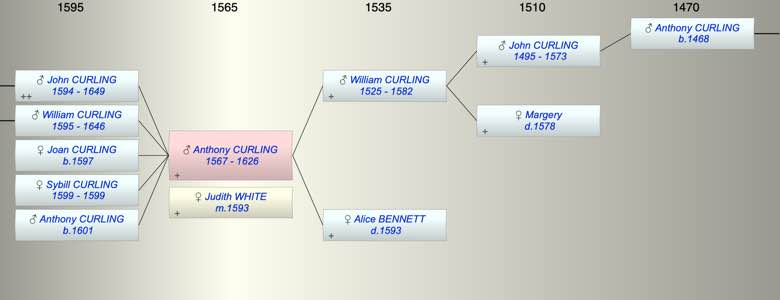

| [Index] |
| Anthony CURLING (1567 - 1626) |
|  |
| b. 1567 at St Laurence |
| m. 10 Oct 1593 Judith WHITE at St Peter, Thanet |
| d. 1626 at St Laurence aged 59 |
| Parents: |
| William CURLING (1525 - 1582) |
| Alice BENNETT ( - 1593) |
| Siblings (6): |
| Roger CURLING (1557 - 1590) |
| Gregory CURLING (1559 - 1608) |
| William CURLING (1561 - 1618) |
| Susanna CURLING (1563 - 1604) |
| Alice CURLING (1564 - 1570) |
| Nicholas CURLING (1570 - 1619) |
| Children (5): |
| John CURLING (1594 - 1649) |
| William CURLING (1595 - 1646) |
| Joan CURLING (1597 - ) |
| Sybill CURLING (1599 - 1599) |
| Anthony CURLING (1601 - ) |
| Grandchildren (3): |
| Robert CURLING (1620 - 1621), Mary CURLING (1624 - ), John CURLING (1624 - 1674) |
| Events in Anthony CURLING (1567 - 1626)'s life | |||||
| Date | Age | Event | Place | Notes | Src |
| 1567 | Anthony CURLING was born | St Laurence | Note 1 | ||
| 1582 | 15 | Death of father William CURLING (aged 57) | Note 2 | ||
| 1593 | 26 | Death of mother Alice BENNETT | Note 3 | ||
| 10 Oct 1593 | 26 | Married Judith WHITE | St Peter, Thanet | Note 4 | |
| 1594 | 27 | Birth of son John CURLING | St Peters, Thanet | Note 5 | |
| 1595 | 28 | Birth of son William CURLING | St Peter, Thanet | Note 6 | |
| 1597 | 30 | Birth of daughter Joan CURLING | St Peter, Thanet | bap 26 Jun 1597 ex FMP PR | |
| 1599 | 32 | Birth of daughter Sybill CURLING | St Peter, Thanet | bap 11 Nov 1595 ex FMP PR | |
| 1599 | 32 | Death of daughter Sybill CURLING | St Peter, Thanet | Note 7 | |
| 1601 | 34 | Birth of son Anthony CURLING | St Peter, Thanet | bap 24 May 1601 ex FMP PR | |
| 1626 | 59 | Anthony CURLING died | St Laurence | buried 10 Sep 1626 ex FMP PR | |
| Personal Notes: |
| will 1626 |
| Created on a Mac™ using iFamily for Mac™ on 8 Oct 2023 |